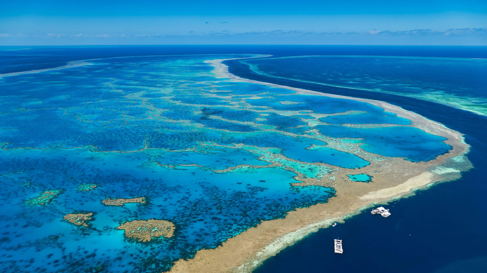
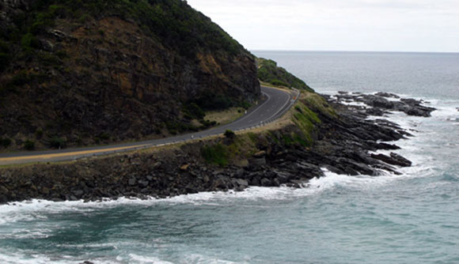
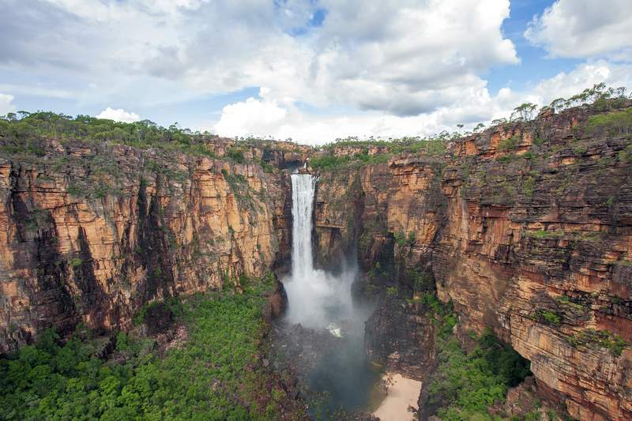
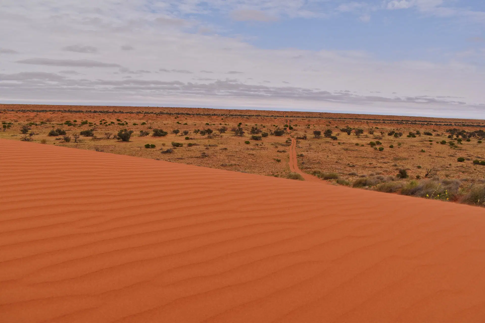
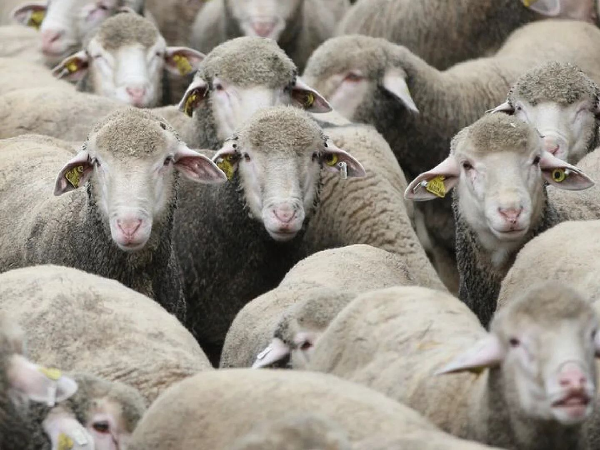

Descripcion del pais

Nueva Guinea es la segunda isla más grande del mundo, situada en el sudoeste del océano Pacífico, al norte de Australia. La isla está dividida políticamente en dos partes: la mitad occidental pertenece a Indonesia y se conoce como Papúa y Papúa Occidental, mientras que la mitad oriental forma parte de Papúa Nueva Guinea, un país independiente. Nueva Guinea es famosa por su biodiversidad y por albergar una gran cantidad de tribus indígenas con culturas y lenguas únicas, muchas de las cuales han permanecido aisladas durante siglos. La isla posee una geografía diversa que incluye montañas, selvas densas, ríos caudalosos y una rica costa marina. Su población es mayoritariamente rural, y muchos de sus habitantes viven de la agricultura y la pesca.
5 lugares para ir de vacaciones
1. Monte Wilhelm
El Monte Wilhelm es la montaña más alta de Papúa Nueva Guinea, con una altitud de 4,509 metros. Es un destino popular para excursionistas y aventureros que buscan una experiencia desafiante pero gratificante. La ruta hasta la cumbre atraviesa diferentes ecosistemas, desde selvas tropicales hasta páramos alpinos, ofreciendo vistas espectaculares y una rica biodiversidad.
2. Valle de Baliem

Ubicado en la región de las tierras altas occidentales de Papúa, Indonesia, el Valle de Baliem es hogar de las tribus Dani, Yali y Lani. Es un lugar fascinante para aprender sobre las culturas indígenas que han vivido aquí durante miles de años. El valle también es conocido por su festival anual, donde las tribus locales recrean sus antiguas batallas en una celebración cultural vibrante.
3. Archipiélago de Bismarck

Este conjunto de islas en Papúa Nueva Guinea es famoso por sus impresionantes paisajes marinos y la riqueza de su vida submarina. Es un destino perfecto para buceadores y amantes del snorkel, que pueden explorar arrecifes de coral vírgenes y descubrir una abundante fauna marina, incluidos tiburones, rayas y peces tropicales.
4. Parque Nacional Lorentz
Situado en Papúa, Indonesia, el Parque Nacional Lorentz es una de las áreas protegidas más grandes del sudeste asiático y un sitio del Patrimonio Mundial de la UNESCO. El parque abarca una diversidad de ecosistemas, desde glaciares hasta selvas tropicales, y es hogar de una gran variedad de especies endémicas de flora y fauna. Es un paraíso para los ecoturistas y los amantes de la naturaleza.
5. Rabaul
Rabaul es una ciudad histórica en la isla de Nueva Bretaña, parte de Papúa Nueva Guinea. Fue una base importante durante la Segunda Guerra Mundial, y hoy en día, sus restos, incluyendo túneles y aviones hundidos, son un atractivo para los turistas. Además, Rabaul es conocida por sus volcanes activos, como el Monte Tavurvur, que ofrece impresionantes vistas y la oportunidad de observar la actividad volcánica de cerca.
Datos curiosos
1. Diversidad Lingüística Única

Nueva Guinea es hogar de más de 1,000 lenguas diferentes, lo que la convierte en uno de los lugares con mayor diversidad lingüística en el mundo. Esta variedad se debe a la geografía montañosa de la isla, que ha mantenido a las comunidades aisladas durante siglos.
2. Especies Descubiertas Recientemente
Debido a su biodiversidad, Nueva Guinea es uno de los lugares más fascinantes para los biólogos. Se han descubierto muchas especies nuevas de plantas y animales en la isla, incluidas varias especies de mamíferos, aves, e insectos que no se encuentran en ningún otro lugar del mundo
3. Tercera Masa Terrestre con Mayor Elevación
A pesar de ser una isla, Nueva Guinea alberga algunas de las montañas más altas del Pacífico, incluyendo el Monte Wilhelm y el Puncak Jaya, este último es el pico más alto de Oceanía y uno de los siete picos más altos del mundo en sus respectivos continentes.
Quiz
¡Prueba tus conocimientos con este Quiz!
Gracias por participar
Tu puntaje fue: